Detalhes - Aba Documentos
A aba Documentos possui a finalidade de vincular a OP com outros tipos de documentos. Dentro desta aba existem duas sub-abas: Compra e Vendas.
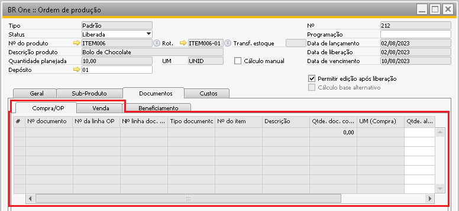{kind=link}
Aba Compra/OP
Na aba Compra/OP é possível adicionar os seguintes tipos de documentos de compra.
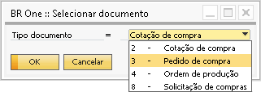{kind=link}
Para adicionar um documento, basta pressionar o botão Incluir documento. Para remover um documento, basta selecionar a linha desejada e pressionar o botão Excluir documento.
Cotação de compra /Pedido de compra /Solicitação de Compra
Para uma cotação estar disponível para ser vinculada, ela deve conter algum componente da OP e estar com o status aberta, mas caso o usuário queira vincular um documento já fechado é necessário que a configuração Permitir vincular documentos de compras/OP/vendas fechados esteja selecionada.
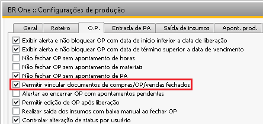 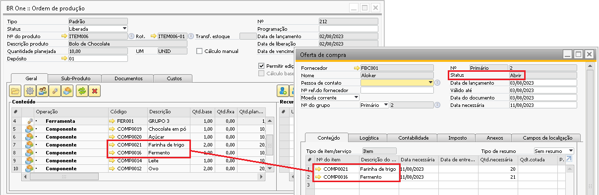 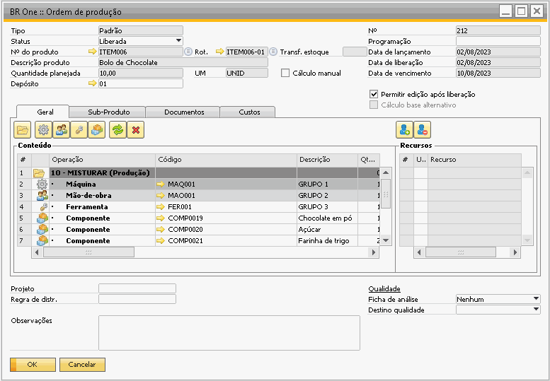{kind=link}
{kind=link}
{kind=link}
O mesmo pré-requisito se faz necessário para a importação de pedido de compra, documento estar com status Abrir e possuir algum componente da OP nas linhas.
Ordem de produção
Para vincular uma ordem de produção é necessário que o item de cabeçalho da OP seja algum componente da OP que será vinculada e estar com status Planejada ou Liberada. Para os documentos de ordem de produção caso seja preciso selecionar uma OP já fechada também é necessário que a configuração Permitir vincular documentos de compras/OP/vendas fechados esteja selecionada.
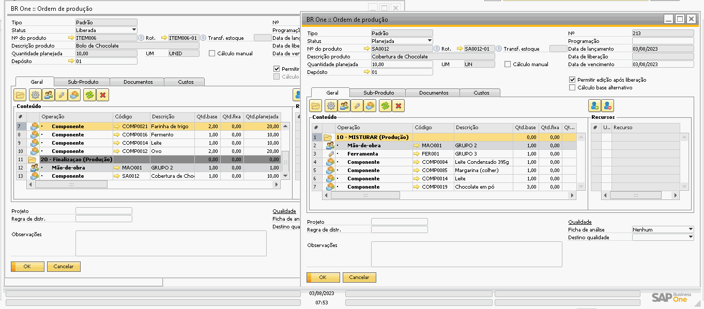{kind=link}
Também é permitido vincular mais de um tipo de documento na ordem de produção.
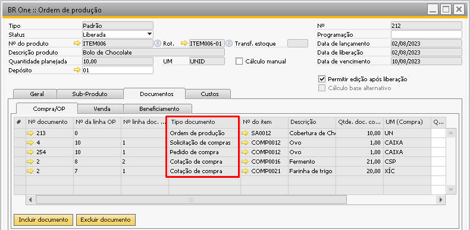{kind=link}
Vínculo por MRP
Este vínculo também pode ser realizado automaticamente pelo sistema em alguns momentos, um deles ocorre o processar recomendações de uma mesma execução (Id execução) no MRP, se elas tiverem vínculo entre si os documentos gerados serão vinculados automaticamente.
Acompanhe a simulação abaixo:
Foi criado o pedido de vendas de 1.500 bolos de chocolate
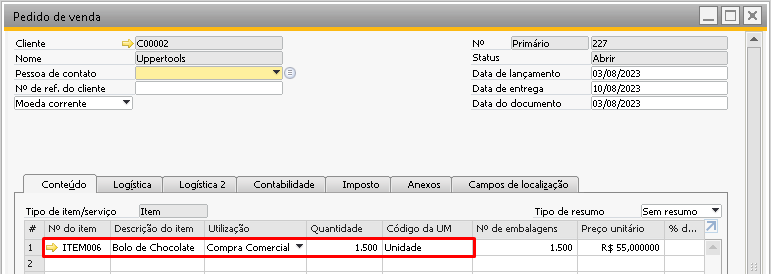{kind=link}
Como não existe quantidades totais dos componentes em estoque ao executar o assistente de MRP foi identificado a necessidade de compra destes suprimentos e recomendada a compra/produção.
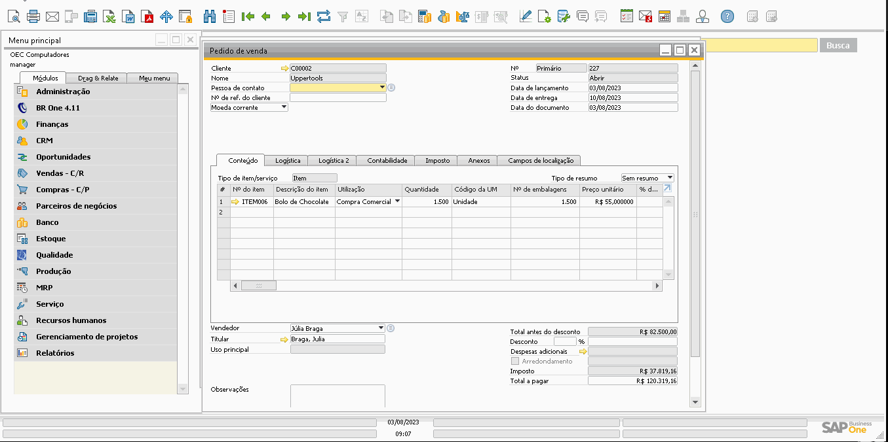{kind=link}
É possível notar na simulação acima que a OP é criada a partir do MRP vinculando nas abas:
Compra/OP: Os pedidos de compra para o fornecimento de suprimentos para atender a OP.
Venda: O pedido de venda que gerou a demanda para a criação da OP.
Esse vínculo ocorreu porque o processamento de pedidos de compra e criação da OP ocorreram na mesma execução do MRP.
Quando o documento é vinculado a uma OP ele não poderá ser cancelado, caso o usuário tente ele será informado com o número da OP vinculada.
{kind=link}
BR One :: Não é possível cancelar este documento, pois o mesmo está vinculado a OP nº X.
Aba Venda
Na aba Vendas o processo de vínculo com documentos é semelhante, o documento disponível para vínculo nesta aba é ‘Pedido de venda’
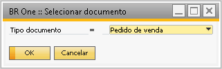{kind=link}
Para adicionar um documento, basta pressionar o botão Incluir documento. Para remover um documento, basta selecionar a linha desejada e pressionar o botão Excluir documento.
O vínculo estará disponível com o pedido em aberto e que contenha algum componente da OP.
Quando a OP é criada a partir do MRP para atender a um pedido de vendas, este pedido é vinculado automaticamente na aba Vendas.
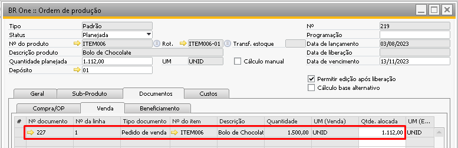{kind=link}
Outro vínculo realizado automaticamente na aba Venda em uma ordem de produção é quando a OP é gerada a partir do processo de Make to order ((Deixar o link da documentação do Make to Order se possível))), onde o pedido de venda que deu origem a OP é vinculado na aba Venda.
Note no processo abaixo que ao gerar a OP a partir do pedido de vendas na opção Abrir OPs para PAs e semi-acabados do pedido o sistema vincula 2 documentos nela:
Aba venda: O pedido de venda que deu origem a OP
Aba Compra/OP: A OP do item semiacabado que será utilizado no processo de produção.
{kind=link}
Caso na simulação acima fosse utilizada a opção Abrir OPs para PAs do pedido então apenas a OP para o item do pedido de vendas seria criada, a OP para o semi-acabado não seria criada, desta forma a aba Compra/OP não teria nenhum vínculo.
Quantidade alocada
Quando o vínculo do documento é realizado pelo MRP ou pelo Make to Order, automaticamente é preenchida a coluna Quantidade alocada.
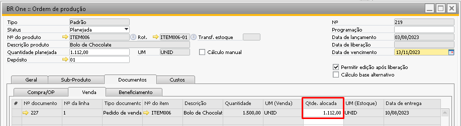{kind=link}
Para documentos que foram vinculados pelo MRP, não é permitido editar o valor desta coluna. Se usuário tentar editar, será exibida a seguinte mensagem de erro:
{kind=link}
_BR One :: Não é permitido editar a quantidade de linhas que foram vinculadas pelo MRP._
Quando um documento é vinculado em uma OP de forma manual, o usuário é obrigado a informar uma quantidade alocada. A quantidade alocada não pode ser maior que a quantidade disponível do documento e nem maior do que a quantidade planejada da Ordem de produção, caso o usuário tente será bloqueado com a mensagem:
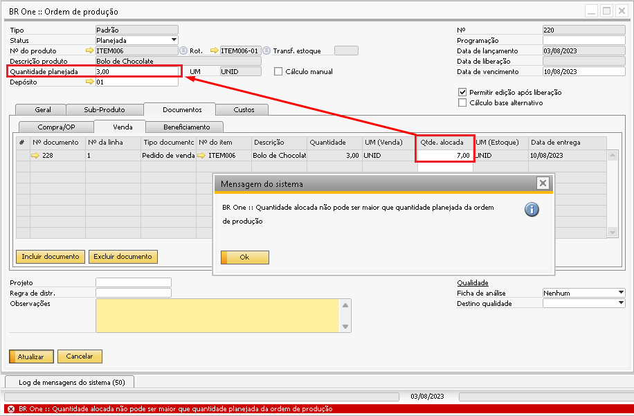{kind=link}
Caso mais de um pedido seja vinculado a OP, a soma das quantidades alocadas não poderá ser maior que o campo Quantidade planejada para a OP.
Caso um pedido de vendas seja vinculado em mais de uma OP, a soma das quantidades alocadas nas OPs não poderá ser maior do que a quantidade do pedido de venda.
A coluna Quantidade alocada irá influenciar na execução do assistente de MRP. No exemplo a seguir, temos um pedido de compra que possui data de entrega para dia 13/08/2020.
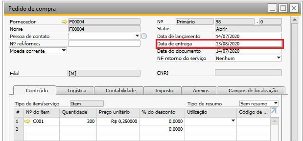{kind=link}
Esse documento foi vinculado a uma Ordem de produção e teve sua quantidade total (200,00) alocada para esta OP.
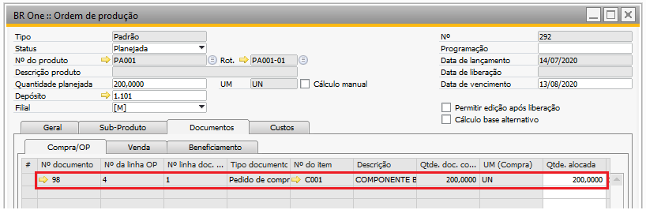{kind=link}
Ao executar o assistente de MRP considerando os pedidos de compra, mesmo existindo o fornecimento do pedido que está sendo usado como exemplo, o MRP não irá considerar ele, por sua quantidade já está alocada para uma OP, então, o MRP irá sugerir a compra do item C001 ao invés de considerar o pedido que já existe.
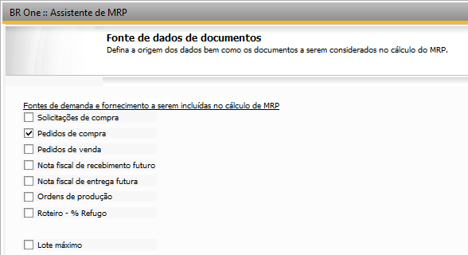 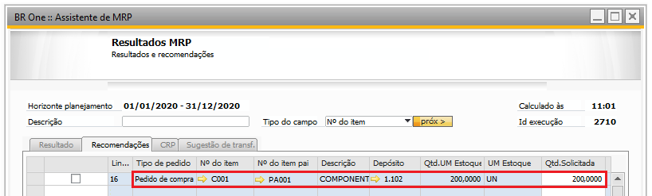{kind=link}
{kind=link}
Se um documento de compra estiver vinculado em mais de uma OP e a soma das quantidades alocadas em todas as OPs for maior que a quantidade no documento de compra, a seguinte mensagem será exibida:
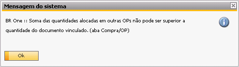{kind=link}
{kind=link}
_BR One :: Soma das quantidades alocadas em outras OPs não pode ser superior a quantidade do documento vinculado. (aba Compra/OP)_
Exemplo: Nas OPs 292 e 293 abaixo, há vinculado o pedido 98 com quantidade 20. Se em uma OP tiver vinculado 10 e na outra for tentado vincular 11, a soma dessas quantidades dará 21, ultrapassando o valor total do pedido.
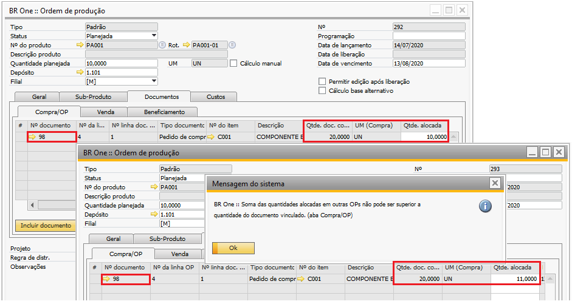{kind=link}
Quando os documentos de compra forem gerados pelo MRP, a seguinte regra será considerada para definir a quantidade alocada:
Quantidade alocada = O menor valor entre a Quantidade planejada (componente) e a Quantidade do documento vinculada.
Exemplo: Para as OPs 292 e 293, há o item C001 com quantidade planejada de 10.
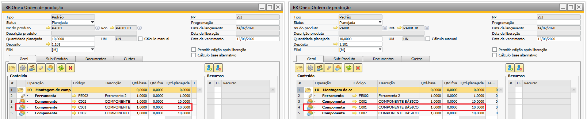{kind=link}
Ao executar o MRP, será recomendado um pedido de compra de quantidade 10 para cada linha.
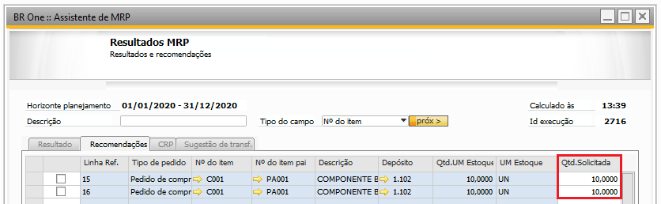{kind=link}
Mas, se na primeira linha for colocado 5 e na segunda for colocado 15, ao processar em grupo ou separadamente, a regra terá que ser considerada.
No caso do exemplo, será processado em grupo. Então, será criado um pedido de compra com o total de 20.
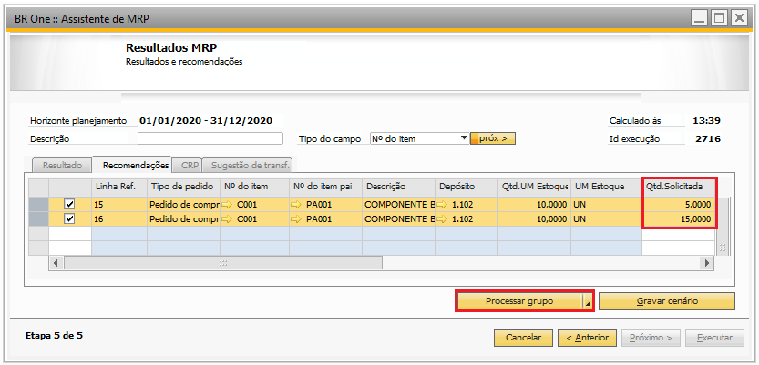{kind=link}
Após gerar o pedido de compra, a regra será considerada e será alocado 5 para a OP 292 (foi processado 5) e 10 para a OP 293 (foi processado 15):
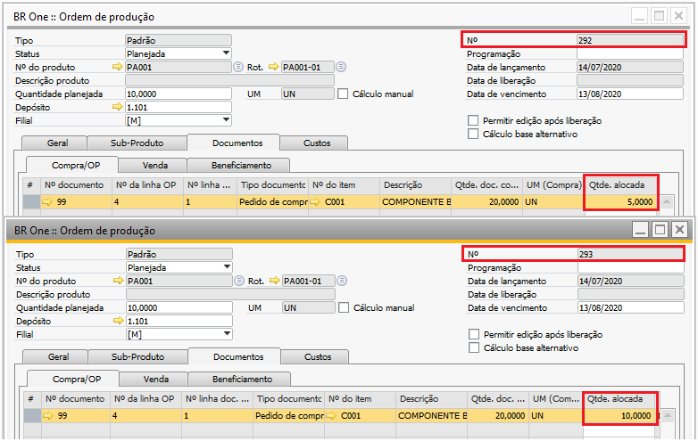{kind=link}